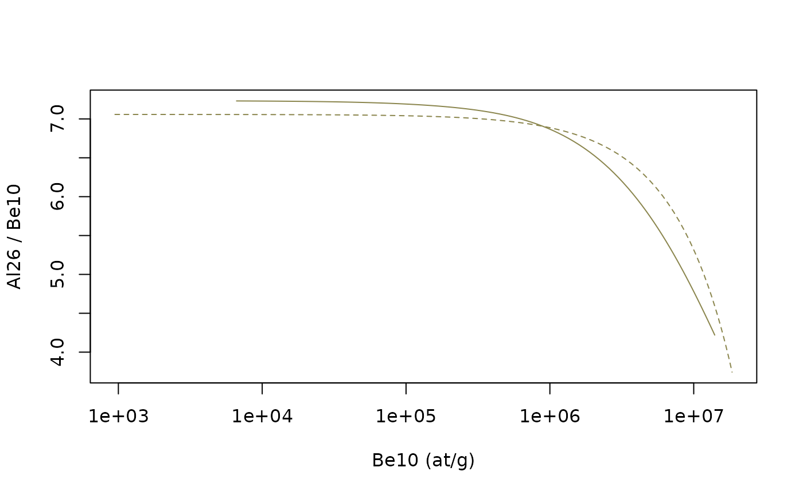
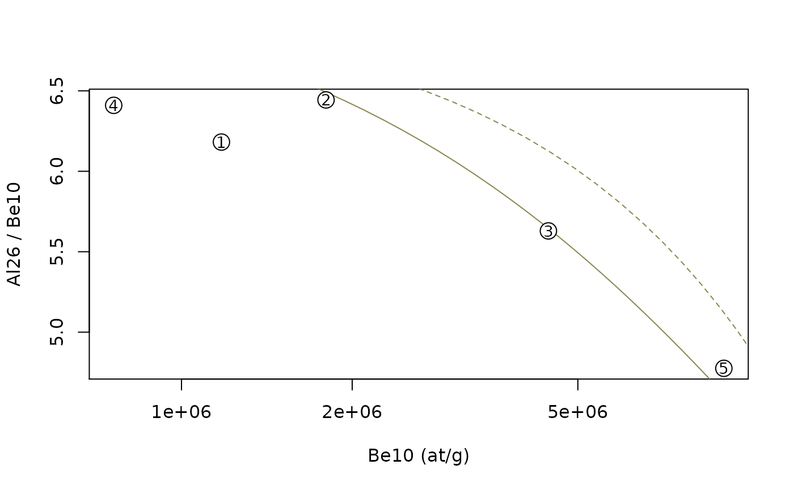
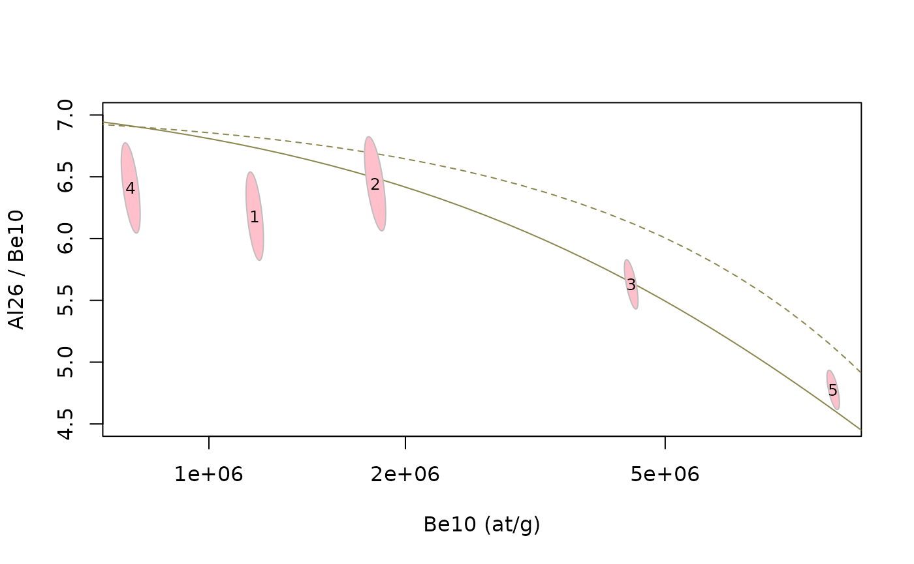
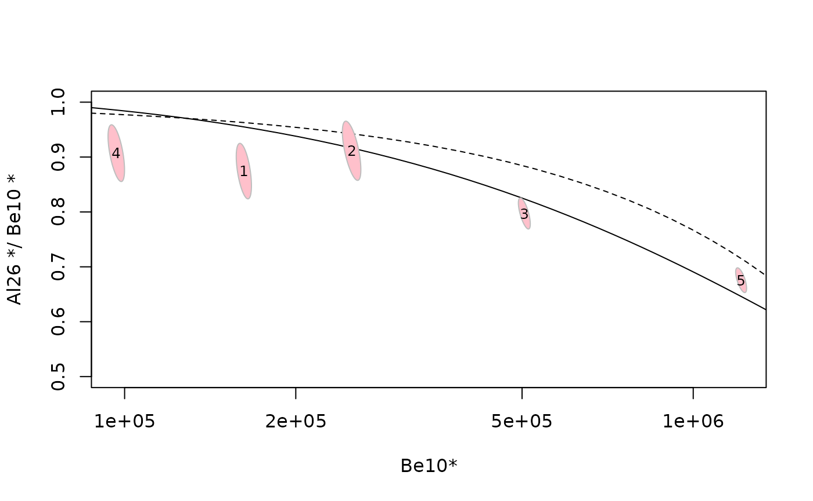

two_nuclides_plots.RmdThis html page is derived from an R Markdown Notebook. You can copy/paste the various lines of code into your own R script and run it in any R session.
The first thing we have to do is to load the TCNtools
library (once it has been installed)
library("TCNtools")We should the define the basic parameters we are going to use for the computation, which are two vectors :
We can first load the attenuation length data (g/cm\(^2\)). Documentation of this dataset is
accessible with ?Lambda.
data(Lambda) # we load a vector containing the attenuation length into the environment
print(Lambda)## Lspal Lstop Lfast
## 160 1500 4320
rho = 2.7 # we also define the density (g/cm3)The the production and decay parameters. Documentation of this
dataset is accessible with ?prm.
data(prm) # we load a matrix containing the production/decay parameters into the environment
print(prm)## Be10 Al26 C14
## Pspal 4.01000e+00 2.793000e+01 1.224000e+01
## Pstop 1.20000e-02 8.400000e-01 3.310000e+00
## Pfast 3.90000e-02 8.100000e-02 0.000000e+00
## lambda 5.09667e-07 9.667325e-07 1.209681e-04We also need to define the properties of our site of interest and compute the relevant scaling parameters.
altitude = 1000 # elevation in m
latitude = 45 # latitude in degrees
P = atm_pressure(alt=altitude,model="stone2000") # compute atmospheric pressure at site
S = scaling_st(P,latitude) # compute the scaling parameters according to Stone (2000)We also need to define the properties of our site of interest and compute the relevant scaling parameters. This is a first approximation which consider that all samples are close and have similar positions. We will see later how to deal with situations where samples have different positions and hence different scaling parameters.
altitude = 1000 # elevation in m
latitude = 45 # latitude in degrees
P = atm_pressure(alt=altitude,model="stone2000") # compute atmospheric pressure at site
st = scaling_st(P,latitude) # compute the scaling parameters according to Stone (2000)Two-nuclides plots are usually build around two curves representing the predictions, in terms of concentrations, for end-member simplified situations :
We will use the Eulerian point of view (function
solv_conc_eul) to compute the concentrations, which is done
by function tnp_curves.
In order to avoid messing up things later we define here once and for all which is nuclide 1 and which is nuclide 2, according to their respective \(\tau_{1/2}\) :
N1 = "Be10" # longer half-life
N2 = "Al26" # shorter half-lifeWe compute the data for these two curves.
tmp = tnp_curves(prm[,N1],prm[,N2],Lambda,st,rho)
ss_ero = tmp[[1]]
cst_exp = tmp[[2]]The default parameters for the ranges of denudation rates and exposure ages can be adjusted is needed.
Now that we can plot everything in a two-nuclide graph. While not mandatory, it is recommended to organize the plot this way :
plot(NA,xlim=range(cst_exp$C1,ss_ero$C1),ylim=range(cst_exp$C2/cst_exp$C1,ss_ero$C2/ss_ero$C1),log="x",
xlab=paste(N1,"(at/g)"),ylab=paste(N2,"/",N1))
lines(cst_exp$C1,cst_exp$C2/cst_exp$C1,lty=2,col="khaki4") # constant exposure, dashed line
lines(ss_ero$C1,ss_ero$C2/ss_ero$C1,col="khaki4") # steady-state erosion, solid line The extent of the plot can be modified to correspond more closely to the reported data.
We are now going to add some data points. Here is a data set.
data = data.frame(
Be10=c(1176054,1798477,4436623,759349,9045913),
Be10_e=c(23955,44533,70831,16776,132287),
Al26=c(7269896,11588554,24975976,4867323,43197465),
Al26_e=c(235842,351978,429957,149041,715748),
lat=c(30.1,33,32.2,30.4,32.7),
alt=c(1000,900,1200,1100,960),
name=c(1,2,3,4,5))
colnames(data) <- sub(N1, "N1", colnames(data)) # we just change the column names to have everything in terms of N1 and N2
colnames(data) <- sub(N2, "N2", colnames(data))
print(data)## N1 N1_e N2 N2_e lat alt name
## 1 1176054 23955 7269896 235842 30.1 1000 1
## 2 1798477 44533 11588554 351978 33.0 900 2
## 3 4436623 70831 24975976 429957 32.2 1200 3
## 4 759349 16776 4867323 149041 30.4 1100 4
## 5 9045913 132287 43197465 715748 32.7 960 5In a first time we are going to compute average scaling parameters for the whole dataset, and we will see later how to account for the differences in locations between the samples.
data$P = atm_pressure(alt=data$alt,model="stone2000") # compute atmospheric pressure at each site
data = cbind(data,scaling_st(data$P,data$lat)) # compute the scaling parameters according to Stone (2000), and merge with samples table
S = c(mean(data$Nneutrons),mean(data$Nmuons)) # average of the st scaling parametersWe recompute the reference curves for the sample scalings
tmp = tnp_curves(prm[,N1],prm[,N2],Lambda,S,rho)
ss_ero = tmp[[1]]
cst_exp = tmp[[2]]Then we plot everything.
plot(NA,xlim=range(data$N1),ylim=range(data$N2/data$N1),log="x",
xlab=paste(N1,"(at/g)"),ylab=paste(N2,"/",N1))
lines(cst_exp$C1,cst_exp$C2/cst_exp$C1,lty=2,col="khaki4") # constant exposure, dashed line
lines(ss_ero$C1,ss_ero$C2/ss_ero$C1,col="khaki4") # steady-state erosion, solid line
#
points(data$N1,data$N2/data$N1,pch=21,bg="white",cex=2)
text(data$N1,data$N2/data$N1,data$name,cex=0.9)
We are now going to plot the uncertainties associated with each
measurement. Is important to note that X (N1) and Y (N2/N1) are
correlated, which implies that we can not simply display uncertainty as
error bars. The function tnp_ellipse allows to compute an
error ellipse accounting for this correlation. This function takes the
concentration and their uncertainties as well as desired confidence
level, and return the contours of the corresponding ellipses.
plot(NA,xlim=range(data$N1),ylim=range(data$N2/data$N1,4.5,7),log="x",
xlab=paste(N1,"(at/g)"),ylab=paste(N2,"/",N1))
lines(cst_exp$C1,cst_exp$C2/cst_exp$C1,lty=2,col="khaki4") # constant exposure, dashed line
lines(ss_ero$C1,ss_ero$C2/ss_ero$C1,col="khaki4") # steady-state erosion, solid line
#
el = tnp_ellipse(data$N1, data$N1_e, data$N2, data$N2_e,confidence=0.68)
for (i in 1:length(el)) {polygon(el[[i]],col="pink",border="grey")}
text(data$N1,data$N2/data$N1,data$name,cex=0.8)
In some cases the various samples that we want to plot on a two-nuclides graph might have different spatial origins, with very different latitude, longitude and elevation, and therefore different scaling factors. In this case we need to normalize both the sample data and the steady-state denudation and constant exposure curves.
Each concentration is normalized by the SLHL production rate.
tmp = tnp_curves(prm[,N1],prm[,N2],Lambda,c(1,1),rho)
ss_ero_n = tmp[[1]]
cst_exp_n = tmp[[2]]
ss_ero_n$C1 = ss_ero_n$C1/sum(prm[1:3,N1])
ss_ero_n$C2 = ss_ero_n$C2/sum(prm[1:3,N2])
cst_exp_n$C1 = cst_exp_n$C1/sum(prm[1:3,N1])
cst_exp_n$C2 = cst_exp_n$C2/sum(prm[1:3,N2])We also normalize the data (by the local surface production rate),
data$N1n = data$N1 / (prm[1,N1]*data$Nneutrons + prm[2,N1]*data$Nmuons + prm[3,N1]*data$Nmuons)
data$N1n_e = data$N1_e / (prm[1,N1]*data$Nneutrons + prm[2,N1]*data$Nmuons + prm[3,N1]*data$Nmuons)
data$N2n = data$N2 / (prm[1,N2]*data$Nneutrons + prm[2,N2]*data$Nmuons + prm[3,N2]*data$Nmuons)
data$N2n_e = data$N2_e / (prm[1,N2]*data$Nneutrons + prm[2,N2]*data$Nmuons + prm[3,N2]*data$Nmuons)And finally plot,
plot(NA,xlim=range(data$N1n),ylim=range(data$N2n/data$N1n,0.5,1),log="x",
xlab=paste(N1,"*",sep=""),ylab=paste(N2,"*/",N1,"*"))
lines(cst_exp_n$C1,cst_exp_n$C2/cst_exp_n$C1,lty=2) # constant exposure, dashed line
lines(ss_ero_n$C1,ss_ero_n$C2/ss_ero_n$C1) # steady-state erosion, solid line
#
el = tnp_ellipse(data$N1n, data$N1n_e, data$N2n, data$N2n_e,confidence=0.68)
for (i in 1:length(el)) {polygon(el[[i]],col="pink",border="grey")}
text(data$N1n,data$N2n/data$N1n,data$name,cex=0.8)